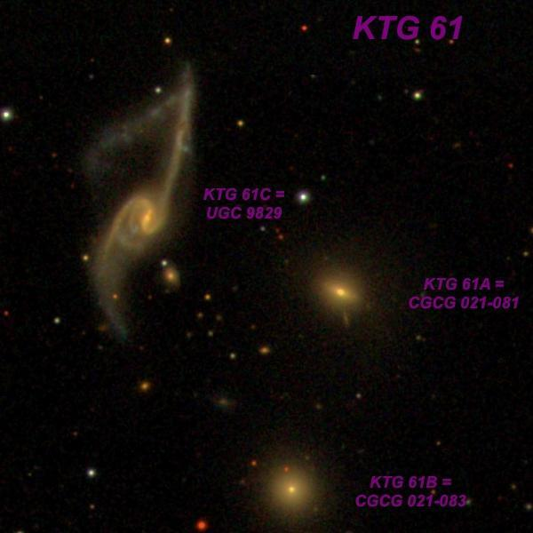
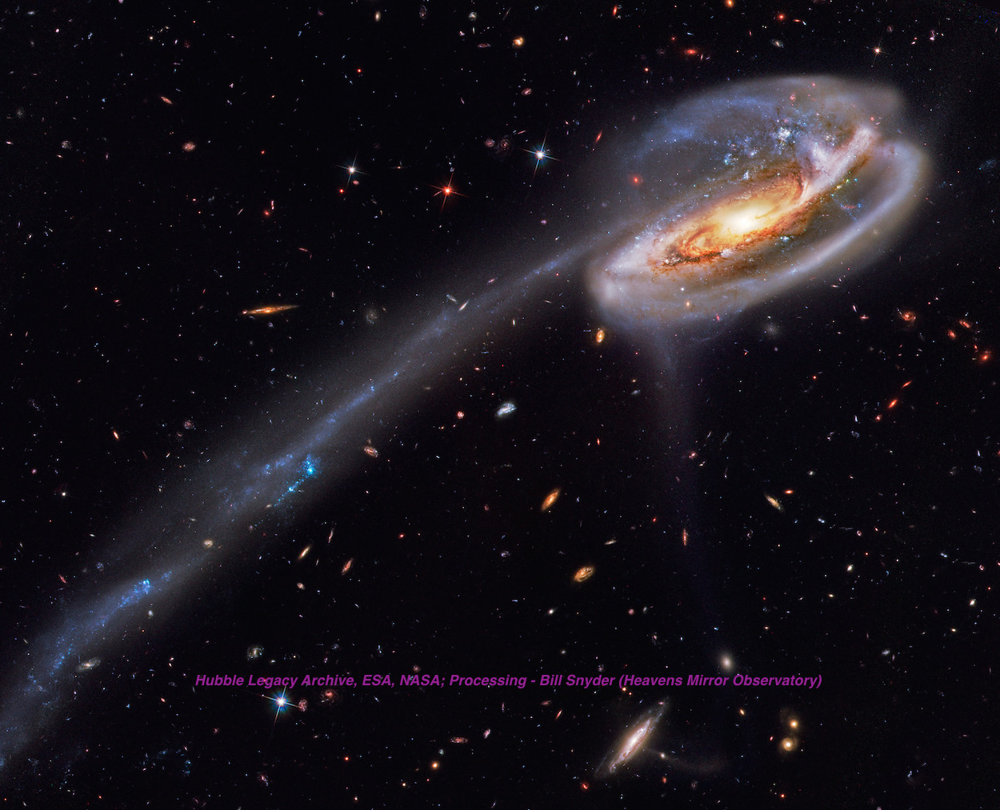

UGC 9829 - Now That's a Strange Galaxy!
- Name: UGC 9829 = MCG +00-39-023 = CGCG 021-085 = VV 847 = KTG 61C = WBL 565-003 = PGC 54911
- RA: 15h 23m 01.6s
- Dec: -01° 20' 50" (2000)
- Constellation: Serpens
- Type: Sb peculiar
- Size: 2.1'x0.9'
- Magnitudes: 14.0V, 15.0B
So how did Arp miss this peculiar galaxy? Vorontsov-Velyaminov included UGC 9829 as VV 847 in his Atlas of Interacting Galaxies, Part II under the heading "Jets and Tails without visible cause." My pick for OOTW is part of a trio cataloged as KTG 61, from the Isolated Triplets of Galaxies by Valentina Karachentseva and Igor Karachentsev. The three galaxies have fairly similar redshifts (z = .0275 to z = .0290), but the two companions (CGCG 021-081 and -083) to UGC 9829 appear undisturbed. A 4th galaxy (also undisturbed) to the southeast (CGCG 021-087) shares this redshift and the quartet is cataloged as WBL 565 in the 1999 A Catalog of Nearby Poor Clusters of Galaxies.
Some important questions remain. Which galaxy has disrupted UGC 9829? Is the long northern arm actually "broken" and dangling at an odd angle, or is the appearance mainly due to our perspective and the galaxy's high inclination? Or perhaps the oddly bent portion of the northern tidal arm is a separate galaxy? In the scientific literature, UGC 9829 is considered a "merger remnant" -- in other words, the two galaxies have already fully merged (only a single nucleus is evident). I've tried searching through the literature and can't find any studies that shed light on these questions. What do you think? Here's a labeled SDSS image.

UGC 9829 lies in the southwest corner of Serpens about 3.6° south-southeast of M5. NED lists one redshift-independent distance of 116 Mpc or 378 million l.y. (Tully-Fischer method), which is nearly an exact match with the Hubble-flow distance of 118 Mpc. I made two observations with my 24-inch in 2014 as part of a survey of all 84 KTG triplets and a portion of the tidal arms was seen on one observation. The small CGCG galaxies (roughly V = 15.0 and B = 16.0) were both faintly visible continuously with averted vision.
24" (5/29/14): UGC 9829 is fairly faint, elongated 4:3 N-S, 0.4'x0.3'. The remarkable tidally stretched arms extending north and south were not seen.
24" (6/27/14): UGC 9829 is faint and small with a slightly elongated core region about 15"x12". Often extremely faint extensions (arms) are visible extending NNW to SSE, but full size on images not seen. Brightest in a trio (KTG 61) with CGCG 021-081 1.6' WSW and CGCG 021-083 2.4' SSW.
I had another look through Jimi's 48-inch in 2019 at 545x, and the tidal arms were much more impressive!
48" (5/1/19): This unusual galaxy contained a bright elongated core ~0.3'x0.2'. A spiral arm is attached on the east side and is brightest near the root. It continues as a diffuse, low surface brightness extension to the south and bends slightly convex to the east, for a total length of ~40". A second faint tidal arm is attached on the NW side of the core. This thin arm extends straight north for a full 1' and brightens somewhat at the north end. The faint, broken section angling southeast from the north tip was marginal and not seen with confidence.
The late Rick Johnson, who posted a large collection of his "off the beaten path" galaxies on CloudyNights, imaged this galaxy in late 2013 and it caught my imagination.

Because UGC 9829 doesn't have a NGC, IC or Arp designation and it hasn't been popularized by an HST image, it's pretty far off the beaten track and could use some observations this month! If you take a look...
As always,
"Give it a go and let us know!
Good luck and great viewing!"